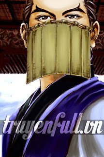
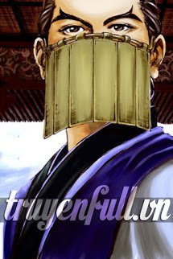

- Tác giả:Tạo Hóa Tiên Nhân
- Thể loại:Tiên Hiệp, Kiếm Hiệp, Xuyên Không, Dị Năng, Cổ Đại
- Nguồn:Bạch Ngọc Sách, Vạn Giới
- Trạng thái:Đang ra
Tóm Tắt
Đại lục tinh linh, đầy huyền ảo và thần bí, nơi chính tà tiên ma cùng nhau tránh bá khiến khắp nơi mây phun gió thổi.
Hàn Siêu, vừa xuyên đến nơi đây liền phải chịu nỗi khổ làm thái giám, thế nhưng sau đó thì vận may tái khởi, liên tục gặp được kỳ ngộ.
“Đồ nhi, ngươi có muốn kết làm đạo lữ, cùng với sư phụ tu hành tìm trường sinh hay không?”
Danh Sách Chương
- Chương 1
- Chương 2
- Chương 3
- Chương 4
- Chương 5
- ......